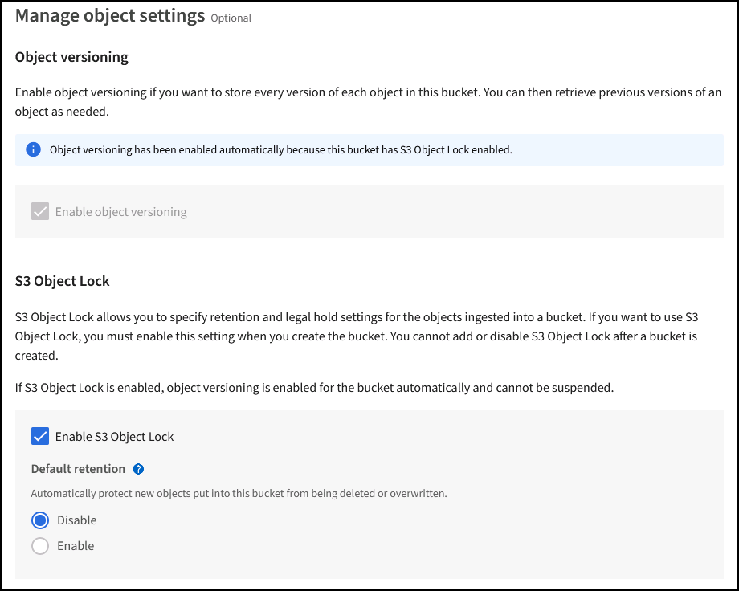
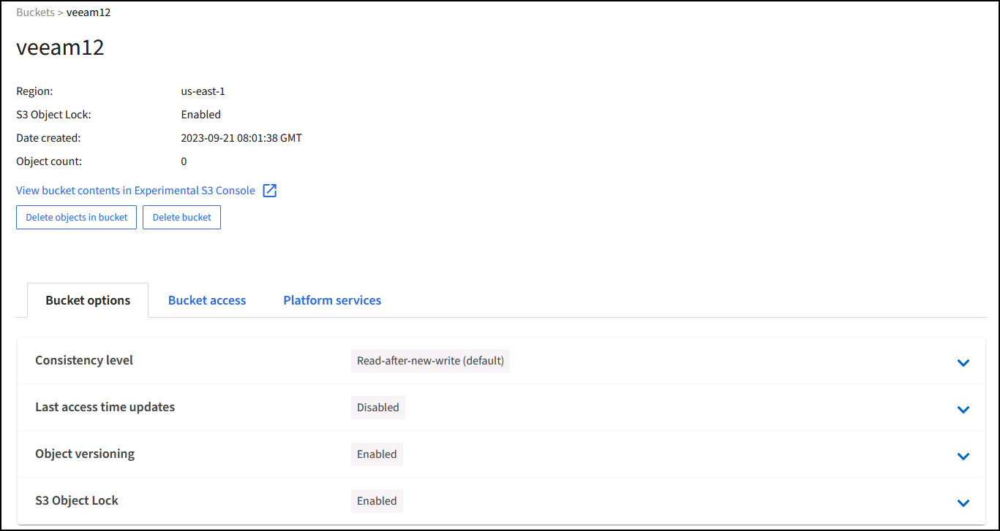

검증된 타사 솔루션
검증된 타사 솔루션
Veeam 백업 및 복제를 사용한 구축에 대한 StorageGRID 모범 사례
 변경 제안
변경 제안
이 가이드에서는 NetApp StorageGRID 구성과 일부 Veeam 백업 및 복제를 중점적으로 다룹니다. 이 문서는 Linux 시스템에 익숙하고 Veeam 백업 및 복제와 함께 NetApp StorageGRID 시스템의 유지 관리 또는 구축을 담당하는 스토리지 및 네트워크 관리자를 위해 작성되었습니다.
개요
스토리지 관리자는 가용성, 빠른 복구 목표, 요구 사항에 맞게 확장 및 장기 데이터 보존을 위한 정책을 자동화하는 솔루션을 사용하여 증가하는 데이터를 관리할 수 있습니다. 이러한 솔루션은 손실 또는 악의적인 공격으로부터 보호되어야 합니다. Veeam과 NetApp은 파트너십을 통해 Veeam 백업 및 복구를 사내 오브젝트 스토리지에 NetApp StorageGRID과 결합하는 데이터 보호 솔루션을 만들었습니다.
Veeam과 NetApp StorageGRID는 전 세계적으로 빠르게 증가하는 데이터 및 늘어나는 규정 요구 사항을 충족하는 사용하기 쉬운 솔루션을 제공합니다. 클라우드 기반 오브젝트 스토리지는 복원력, 확장 기능, 운영 및 비용 효율성으로 인해 백업 대상으로 자연스럽게 선택할 수 있는 것으로 유명합니다. 이 문서는 Veeam 백업 솔루션 및 StorageGRID 시스템 구성에 대한 지침과 권장사항을 제공합니다.
Veeam의 오브젝트 워크로드에는 작은 오브젝트의 여러 동시 배치, 삭제 및 목록 작업이 생성됩니다. 불변성을 설정하면 보존 및 목록 버전을 설정하기 위한 요청 수가 개체 저장소에 추가됩니다. 백업 작업의 프로세스에는 일일 변경 사항에 대한 객체 쓰기가 포함되며 새 쓰기가 완료된 후 작업은 백업의 보존 정책에 따라 모든 객체를 삭제합니다. 백업 작업의 스케줄링은 거의 항상 중복됩니다. 이렇게 겹치면 객체 저장소의 50/50 PUT/DELETE 워크로드로 구성된 백업 윈도우의 상당 부분이 발생합니다. Veeam에서 작업 슬롯 설정을 사용하여 동시 작업 수를 조정하면 백업 작업 블록 크기를 늘리고 다중 개체 삭제 요청의 객체 수를 줄여 객체 크기를 늘릴 수 있습니다. 또한 작업을 완료할 최대 기간을 선택하면 성능 및 비용에 맞게 솔루션을 최적화할 수 있습니다.
에 대한 제품 설명서를 읽어야 합니다 "Veeam 백업 및 복제" 및 "StorageGRID" 시작하기 전에. Veeam을 사용하면 StorageGRID 솔루션을 사이징하기 전에 사용해야 할 Veeam 인프라 및 용량 요구사항의 크기를 이해할 수 있습니다. 의 Veeam Ready 프로그램 웹 사이트에서 Veeam-NetApp의 검증된 구성을 항상 확인하십시오 "Veeam Ready Object, Object Immutability 및 Repository를 사용할 수 있습니다".
Veeam 구성
권장 버전
Veeam Backup & Replication 12 시스템에 최신 핫픽스를 적용하는 것이 좋습니다. 현재는 최소한 Veeam 패치 P20230718을 설치할 것을 권장합니다.
S3 저장소 구성
스케일아웃 백업 저장소(SOBR)는 S3 오브젝트 스토리지의 용량 계층입니다. 용량 계층은 기본 저장소의 확장 기능으로, 데이터 보존 기간이 길고 스토리지 솔루션이 저렴합니다. Veeam은 S3 Object Lock API를 통해 불변성을 제공하는 기능을 제공합니다. Veeam 12는 스케일아웃 저장소에서 여러 버킷을 사용할 수 있습니다. StorageGRID은 단일 버킷의 오브젝트 또는 용량에 대한 제한이 없습니다. 여러 버킷을 사용하면 백업 데이터가 오브젝트에서 페타바이트 규모로 증가할 수 있는 대규모 데이터 세트를 백업할 때 성능이 향상될 수 있습니다.
특정 솔루션 및 요구 사항의 사이징에 따라 동시 작업을 제한해야 할 수 있습니다. 기본 설정에서는 각 CPU 코어와 각 작업 슬롯에 대해 하나의 리포지토리 작업 슬롯을 지정하고 동시 작업 슬롯 제한은 64입니다. 예를 들어 서버에 2개의 CPU 코어가 있는 경우 총 128개의 동시 스레드가 개체 저장소에 사용됩니다. 여기에는 PUT, GET, BATCH Delete가 포함됩니다. Veeam 백업이 새로운 백업 및 백업 데이터의 안정적 상태에 도달하고 만료 예정인 경우 시작할 작업 슬롯에 대해 보수적인 제한을 선택하고 이 값을 조정하는 것이 좋습니다. NetApp 어카운트 팀과 협력하여 원하는 시간 및 성능을 만족하도록 StorageGRID 시스템의 크기를 적절하게 조정해 주십시오. 최적의 솔루션을 제공하기 위해 슬롯당 작업 슬롯의 수와 작업 제한을 조정해야 할 수 있습니다.
백업 작업 구성입니다
Veeam 백업 작업은 신중하게 고려해야 하는 다양한 블록 크기 옵션으로 구성할 수 있습니다. 기본 블록 크기는 1MB이며, 압축 및 중복제거를 통해 Veeam이 제공하는 스토리지 효율성을 통해 초기 전체 백업에는 약 500KB의 오브젝트 크기와 증분 작업에 대해서는 100~200kB 오브젝트를 생성합니다. NetApp은 더 큰 백업 블록 크기를 선택하여 성능을 크게 향상시키고 오브젝트 저장소 요구 사항을 축소할 수 있습니다. 블록 크기가 클수록 오브젝트 저장소의 성능이 크게 향상되지만, 스토리지 효율성 성능의 저하로 인해 기본 스토리지 용량 요구사항이 증가할 가능성이 있습니다. 전체 백업에 대해 약 2MB의 객체를 생성하는 4MB 블록 크기로 백업 작업을 구성하고 증가분에 대해 700kB-1MB 객체 크기를 생성하는 것이 좋습니다. 고객은 Veeam 지원의 도움을 받아 8MB 블록 크기를 사용하여 백업 작업을 구성하는 것도 고려할 수 있습니다.
변경 불가능한 백업을 구현하면 오브젝트 저장소에서 S3 오브젝트 잠금을 사용합니다. 불변성 옵션은 객체에 대한 목록 및 보존 업데이트를 위해 객체 저장소에 대한 요청을 더 많이 생성합니다.
백업 보존 기간이 만료되면 백업 작업이 객체 삭제를 처리합니다. Veeam은 요청당 1,000개의 오브젝트가 포함된 다중 오브젝트 삭제 요청의 삭제 요청을 오브젝트 저장소로 전송합니다. 소규모 솔루션의 경우 요청당 객체 수를 줄이기 위해 조정해야 할 수 있습니다. 이 값을 낮추면 삭제 요청을 StorageGRID 시스템의 노드에 고르게 분산시킬 수 있는 이점이 추가됩니다. 다중 개체 삭제 제한을 구성할 때는 아래 표의 값을 시작점으로 사용하는 것이 좋습니다. 표의 값에 선택한 어플라이언스 유형의 노드 수를 곱하여 Veeam의 설정 값을 구합니다. 이 값이 1000보다 크거나 같으면 기본값을 조정할 필요가 없습니다. 이 값을 조정해야 하는 경우, Veeam 지원에 문의하여 변경하십시오.
| 어플라이언스 모델 | 노드별 S3MultiObjectDeleteLimit |
|---|---|
SG5712를 참조하십시오 |
34 |
SG5760입니다 |
75를 |
SG6060입니다 |
200 |

|
특정 요구 사항에 맞는 권장 구성을 위해 NetApp 세일즈 팀과 협력하십시오. Veeam 구성 권장 사항에는 다음이 포함됩니다.
|
StorageGRID 구성
권장 버전
최신 핫픽스가 포함된 NetApp StorageGRID 11.6 또는 11.7은 Veeam 구축에 권장되는 버전입니다. StorageGRID 11.6.0.11 및 11.7.0.4에 많은 최적화 기능이 도입되어 Veeam 워크로드에 유용합니다. 항상 최신 상태를 유지하고 StorageGRID 시스템에 최신 핫픽스를 적용하는 것이 좋습니다.
로드 밸런서 및 S3 엔드포인트 구성
Veeam을 사용하면 HTTPS를 통해서만 엔드포인트를 연결해야 합니다. 암호화되지 않은 연결은 Veeam에서 지원되지 않습니다. SSL 인증서는 자체 서명된 인증서, 신뢰할 수 있는 개인 인증 기관 또는 신뢰할 수 있는 공용 인증 기관일 수 있습니다. S3 저장소에 대한 지속적인 액세스를 보장하려면 HA 구성에서 로드 밸런서를 2개 이상 사용하는 것이 좋습니다. 로드 밸런서는 모든 관리 노드 및 게이트웨이 노드에 있는 StorageGRID에서 제공하는 통합 로드 밸런서 서비스이거나 F5, Kemp, Hafroxy, Loadbalanacer.org 등과 같은 타사 솔루션일 수 있습니다 StorageGRID 로드 밸런서를 사용하면 Veeam 워크로드의 우선순위를 지정할 수 있는 트래픽 분류자(QoS 규칙)를 설정하거나, Veeam을 StorageGRID 시스템에서 우선순위가 높은 워크로드에 영향을 미치지 않도록 제한할 수 있습니다.
S3 버킷
StorageGRID는 안전한 멀티 테넌트 스토리지 시스템입니다. Veeam 워크로드를 위한 전용 테넌트를 생성하는 것이 좋습니다. 필요에 따라 스토리지 할당량을 할당할 수 있습니다. 최선의 방법으로 "자체 ID 소스 사용"을 활성화합니다. 적절한 암호를 사용하여 테넌트 루트 관리 사용자를 보호합니다. Veeam Backup 12는 S3 버킷의 경우 강력한 일관성이 필요합니다. StorageGRID은 버킷 수준에서 구성된 다양한 정합성 보장 옵션을 제공합니다. Veeam이 여러 위치의 데이터에 액세스할 수 있는 멀티 사이트 배포의 경우 "강력한 글로벌"을 선택하십시오. Veeam 백업 및 복원을 단일 사이트에서만 수행할 경우 일관성 수준을 "강력한 사이트"로 설정해야 합니다. 버킷 일관성 수준에 대한 자세한 내용은 을 참조하십시오 "문서화". Veeam 불변성 백업을 위해 StorageGRID를 사용하려면 S3 오브젝트 잠금을 글로벌로 사용하도록 설정하고 버킷 생성 중에 버킷에 구성해야 합니다.
라이프사이클 관리
StorageGRID는 StorageGRID 노드와 사이트에서 오브젝트 레벨의 보호를 위해 복제 및 삭제 코딩을 지원합니다. 삭제 코딩에는 최소 200kB 오브젝트 크기가 필요합니다. Veeam의 1MB에 대한 기본 블록 크기는 Veeam의 스토리지 효율성 후 종종 이 200kB 권장 최소 크기보다 작을 수 있는 오브젝트 크기를 생성합니다. 솔루션의 성능을 위해 사이트 간 연결이 지연 시간을 추가하거나 StorageGRID 시스템의 대역폭을 제한하지 않는 한 여러 사이트에 걸쳐 있는 삭제 코딩 프로필을 사용하지 않는 것이 좋습니다. 다중 사이트 StorageGRID 시스템에서는 각 사이트에 단일 복제본을 저장하도록 ILM 규칙을 구성할 수 있습니다. 내구성을 최대화하기 위해 각 사이트에 삭제 코딩 복사본을 저장하도록 규칙을 구성할 수 있습니다. 이 워크로드를 위해 Veeam Backup 서버에 로컬에 2개의 복제본을 사용하는 것이 가장 좋습니다.
구현 핵심 사항
StorageGRID
불변성이 필요한 경우 StorageGRID 시스템에서 오브젝트 잠금이 활성화되어 있는지 확인합니다. 관리 UI의 구성/S3 오브젝트 잠금 아래에서 옵션을 찾습니다.

버킷을 생성할 때 불변의 백업에 이 버킷을 사용하려면 "S3 오브젝트 잠금 활성화"를 선택하십시오. 이렇게 하면 버킷 버전 관리가 자동으로 활성화됩니다. Veeam에서 객체 보존을 명시적으로 설정하므로 기본 보존을 사용하지 않도록 설정합니다. Veeam에서 변경 불가능한 백업을 생성하지 않는 경우 버전 관리 및 S3 오브젝트 잠금을 선택하지 않아야 합니다.

버킷이 생성되면 생성된 버킷의 세부 정보 페이지로 이동합니다. 정합성 보장 수준을 선택합니다.

Veeam을 사용하려면 S3 버킷에 대해 강력한 일관성이 필요합니다. 따라서 Veeam을 통해 여러 위치의 데이터에 액세스할 수 있는 멀티 사이트 배포의 경우 "강력한 글로벌"을 선택하십시오. Veeam 백업 및 복원을 단일 사이트에서만 수행할 경우 일관성 수준을 "강력한 사이트"로 설정해야 합니다. 변경 사항을 저장합니다.

StorageGRID는 모든 관리 노드와 전용 게이트웨이 노드에서 통합 로드 밸런서 서비스를 제공합니다. 이 로드 밸런서를 사용하면 QoS(트래픽 분류 정책)를 구성할 수 있다는 이점이 많습니다. 이러한 기능은 다른 클라이언트 워크로드에 대한 애플리케이션 영향을 제한하거나 다른 워크로드에 대한 우선 순위를 지정하는 데 주로 사용되지만 모니터링에 도움이 되는 추가 메트릭 수집도 제공합니다.
구성 탭에서 "트래픽 분류"를 선택하고 새 정책을 생성합니다. 규칙의 이름을 지정하고 유형으로 버킷 또는 테넌트를 선택합니다. 버킷 또는 테넌트의 이름을 입력하십시오. QoS가 필요한 경우 제한을 설정하지만 대부분의 구현에서는 모니터링 이점을 추가하려고 하므로 제한을 설정하지 마십시오.

Veeam을 선택합니다
StorageGRID 어플라이언스의 모델 및 수량에 따라 버킷에서 동시 작업 수의 제한을 선택하고 구성해야 할 수 있습니다.

Veeam 콘솔의 백업 작업 구성에 관한 Veeam 설명서를 따라 마법사를 시작합니다. VM을 추가한 후 SOBR 리포지토리를 선택합니다.

고급 설정 을 클릭하고 저장소 최적화 설정을 4MB 이상으로 변경합니다. 압축 및 중복제거가 활성화되어야 합니다. 요구 사항에 따라 게스트 설정을 변경하고 백업 작업 일정을 구성합니다.

StorageGRID 모니터링
Veeam과 StorageGRID가 함께 작동하는 방식을 자세히 보려면 첫 번째 백업의 보존 시간이 만료될 때까지 기다려야 합니다. 지금까지는 Veeam 워크로드가 주로 PUT 작업으로 구성되며 삭제가 발생하지 않습니다. 백업 데이터가 만료되고 정리가 시작되면 오브젝트 저장소에서 전체 일관된 사용량을 확인하고 필요한 경우 Veeam에서 설정을 조정할 수 있습니다.
StorageGRID는 지원 탭 메트릭 페이지에 있는 시스템 작동을 모니터링하는 편리한 차트를 제공합니다. 주요 대시보드는 정책을 생성한 경우 S3 개요, ILM 및 트래픽 분류 정책입니다. S3 개요 대시보드에서 S3 작업 속도, 지연 시간 및 요청 응답에 대한 정보를 확인할 수 있습니다.
S3 속도 및 활성 요청을 보면 각 노드가 처리 중인 로드의 양과 유형별로 전체 요청 수를 확인할 수 있습니다.

Average Duration(평균 기간) 차트에는 각 노드가 각 요청 유형에 대해 걸리는 평균 시간이 표시됩니다. 이는 요청의 평균 대기 시간이며 추가 튜닝이 필요하거나 StorageGRID 시스템이 더 많은 로드를 처리할 수 있는 공간이 있음을 나타내는 좋은 지표가 될 수 있습니다.

총 완료된 요청 차트에서 유형 및 응답 코드별로 요청을 볼 수 있습니다. 응답에 대해 200(OK)이 아닌 응답이 표시되면 StorageGRID 시스템이 503(느린 속도) 응답을 보내면서 로드가 과중하게 로드되고 있는 것과 같은 문제일 수 있으며 추가적인 튜닝이 필요하거나 로드가 증가하기 위해 시스템을 확장할 시간이 되었을 수 있습니다.

ILM 대시보드에서 StorageGRID 시스템의 삭제 성능을 모니터링할 수 있습니다. StorageGRID는 각 노드에서 동기 및 비동기 삭제를 결합하여 모든 요청의 전반적인 성능을 최적화하고 시도합니다.

트래픽 분류 정책을 사용하면 로드 밸런서에 대한 메트릭을 볼 수 있습니다. 요청 처리량, 속도, 기간, Veeam이 전송 및 수신하는 객체 크기 등을 확인할 수 있습니다.


추가 정보를 찾을 수 있는 위치
이 문서에 설명된 정보에 대해 자세히 알아보려면 다음 문서 및/또는 웹 사이트를 검토하십시오.
올리버 헨셀과 아론 클라인 작사